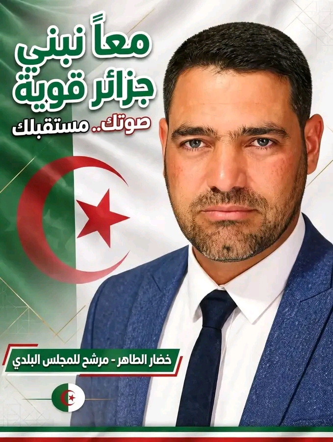

دليل الهيكل التنظيمي
الوظائف الممنوعة من ممارسة السياسة
150 مصلحة وملف - اضغط للدخول
في الكوميساريات - ممنوعون من الترشح والحملة
ملف منفصلالمادة 39 و 198 - حتى توزيع المناشير ممنوع
هام جداالشرطة - الدرك - الحماية المدنية
ملف منفصلمنع 5 سنوات احتياط إجباري
5 سنواتواجب التحفظ المطلق
أمين الخزينة - المراقب المالي - الأمين العام
الجدول الرسمي + المراجع القانونية لكل وظيفة